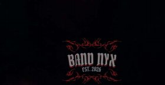

Band Nyx · Vijayawada, Andhra Pradesh
About Band Nyx
Band Nyx is a professional live band based in Vijayawada, Andhra Pradesh, performing high-energy rock, pop, Telugu, Hindi and English music for concerts, college festivals, weddings, corporate events and private shows.
Who we are
Band Nyx is a six-piece live band formed in 2026. We blend rock drive, melodic hooks and crowd energy so every room feels like a headline set—not background noise.
We are based in Vijayawada and regularly perform across Andhra Pradesh and Telangana, with shows in cities including Guntur, Hyderabad and Tirupati, and international performances including Charlotte, USA.
Genres and languages
- Rock, pop and high-energy live arrangements
- Telugu, Hindi and English songs—covers and band-led performances
- Setlists tailored to your audience and event type
Highlights
- 200+ live performances
- Multiple Battle of Bands wins (including KL University and SRM University AP)
- College fests, cultural shows, private concerts, cafés, resorts and wedding receptions
Book Band Nyx in Vijayawada
Phone: +91 79950 22614, +91 90597 53108
Instagram: @band.nyx
See also: Band Nyx members, music and setlists, live shows and venues, booking details.